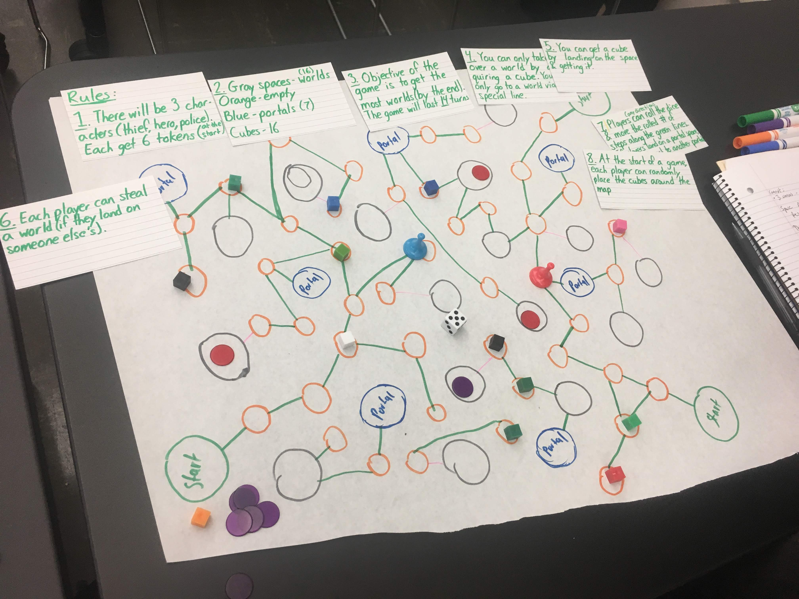
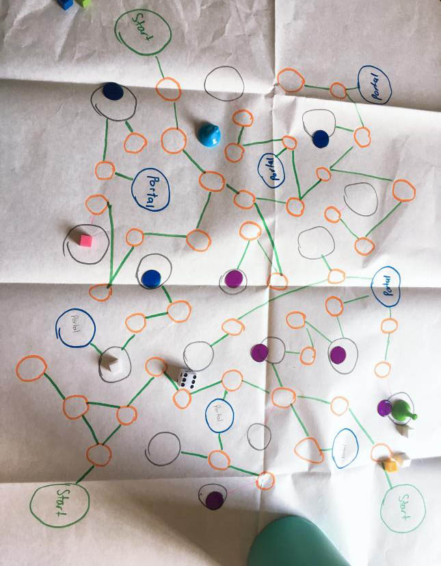

Galaxy Warfare!
Introduction
So the game I came up with is called Galaxy Warfare. Galaxy Warfare is a 3-player game with the premise of it being that there is an ongoing debate between three different parties(thieves, conquerors, and good Samaritans) on who should own the planets of the galaxy. The conquerors want to rule all of the worlds with the intent of becoming a totalitarian government, the thieves also wish to rule but with the motivation of having all the riches, and the good Samaritans want to stop the other two parties so that the galaxy will remain in perfect harmony. Players can join any of the three parties and participate in the battle for the galaxy. The game includes 3 player pieces(each in a different color), 18 tokens (6 of each color), 18 cubes(supply cubes), and 1 dice. There’s fifteen turns to see who can have the most at the end and ultimately win. The game is played by dice rolling and is an area control type of game.

Session #1
My co-creator and I, funnily enough, didn’t complete a full game of the game we made as we were too busy coming up with rules to playtest them. We randomly laid out the supply cubes across the spaces and started the game by having the person who rolled the higher number go first. A rule was implemented when we started venturing out over the map and passing over the supply cubes so that you can only obtain them if you end your turn on a space that has one. We ended our short-lived play session with me rolling a three when I was only 2 spaces away from a world; we ended up deciding that it is not necessary to roll the exact number (the number needed or higher would suffice). A certain amount of turns (14) was set in stone when we wrapped up the short-lived session so that the game would not drag on too long. Although we didn’t get to play the whole way through the game, we had a productive couple of turns on implementing rules that will help make player experience going smoother.

Session #2
I didn’t make any changes between this session and the last one so when I brought the game to play with my friends, it was exactly the same as how I had left it. This session was just us moving according to the number we rolled on the dice and collecting cubes along the way. It wasn’t that exciting (and definitely nothing to write home about). We went through turn after turn with just us moving our characters in whichever way we desired to pick up as many supply cubes as we could. After we all started acquiring worlds though, my friend suggested to give a backstory to each of the characters so that players could feel a bit more attached to them and give a bit more depth into the game. Thus the motivations to acquire the worlds were born. After my friend who was playing as the conqueror successfully took over all the worlds in the galaxy, I decided to change the number of turns to 15 as it seemed more of an even number to end on.

Session #3
This last one was when the most changes were made. It all started out with me playing a session that seemed in a similar vein to the previous two with another player. While the two of us were navigating the galaxy, we were spitballing ideas on how to make the mundane game even more exciting. The idea of creating passive abilities came to mind, something to add a little spice into the mix. My playtester helped me to come up with the special abilities for each role. This also came along with my decision to not scatter all the supply cubes at the beginning to make the game a bit more difficult. The changes these made were seen immediately in the next turn as my crossed paths and ended in my victory. I, who was a good Samaritan, was able to take two supply cubes from my opponent, who was a thief, and thus making the galaxy a good place. I actually continued on to intentionally running into my opponent and taking his items whenever necessary. However, I was not able to become too overpowered due to the fact that only one new supply cube was dropped onto the board per turn. I did actually end up winning the game in the end though!